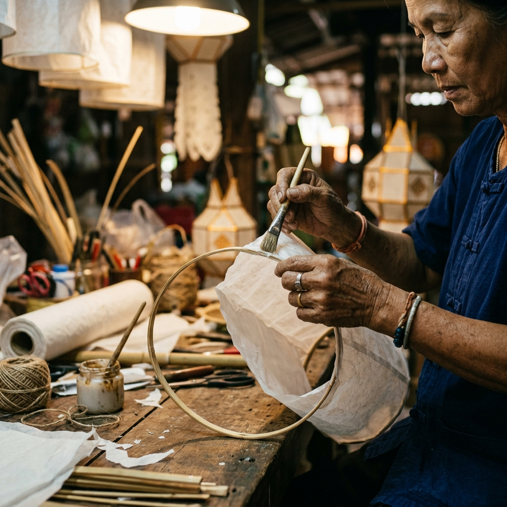

เชียงใหม่ · ล้านนา
ยี่เป็ง
คืนแห่งแสงสวรรค์
เมื่อหมื่นโคมลอยขึ้นสู่ท้องฟ้า
ค้นพบยี่เป็ง
ทุกมิติของเทศกาล
เทศกาล
ยี่เป็งกำเนิดในราชอาณาจักรล้านนา
โคมลอย
การปล่อยโคมลอยเป็นสัญลักษณ์ของการปล่อยวาง
ประเพณี
การส่งโคมขึ้นฟ้าเปรียบดังการปล่อยวางบาป
วางแผนมา
ทุกสิ่งที่ต้องรู้ก่อนมาสัมผัสประสบการณ์ยี่เป็ง

วัดพระธาตุดอยสุเทพ
ศูนย์กลางแห่งศรัทธา
วัดที่ตั้งตระหง่านบนดอยสุเทพ คือหัวใจของเทศกาลยี่เป็ง ทุกปีพระสงฆ์และชาวบ้านจะมาร่วมกันปล่อยโคมบูชาพระธาตุ
ประเพณี
ประวัติ & ที่มา
เทศกาลยี่เป็ง
เทศกาลโคมแห่งล้านนา
ประวัติและที่มา
ยี่เป็งกำเนิดในราชอาณาจักรล้านนา
วัน เวลา & สถานที่
เทศกาลจัดขึ้นคืนวันเพ็ญเดือนพฤศจิกายน
ไทม์ไลน์เทศกาล
บ่าย: ตกแต่งโคม · พลบค่ำ: พิธีสงฆ์
ลำดับคืนยี่เป็ง

โคมลอย · ความหมาย & ศิลปะ
แสงแห่งศรัทธา
ความหมายของแสง
การปล่อยวาง
สู่สรวงสวรรค์
การปล่อยโคมลอยเป็นสัญลักษณ์ของการปล่อยวางความทุกข์
ความหลากหลายของโคมล้านนา

โคมแขวน
โคมที่ใช้ประดับตกแต่งตามวัด

โคมผัด
โคมหมุนที่มีภาพเงาหมุนวนอยู่ภายใน

โคมถือ
โคมขนาดเล็กที่มีด้ามถือ ทรงดอกบัว
โคมลอย
โคมที่ลอยขึ้นสู่ท้องฟ้าด้วยความร้อน
ทำโคมเองได้ — DIY Guide
5 ขั้นตอน
1 / 5ข้อควรรู้ก่อนปล่อยโคม
DO ✓
- ✓ ปล่อยในพื้นที่ที่กำหนดเท่านั้น
- ✓ ตรวจสอบให้แน่ใจว่าไฟลุกสม่ำเสมอ
- ✓ รอให้ลมสงบก่อนปล่อย
DON'T ✗
- ✗ ห้ามปล่อยใกล้สนามบิน (รัศมี 9 กม.)
- ✗ ห้ามปล่อยใกล้สายไฟแรงสูง
- ✗ ห้ามปล่อยโดยไม่มีผู้ดูแล
ประเพณี & ความเชื่อ
จิตวิญญาณล้านนา
ยี่เป็ง vs ลอยกระทง
ยี่เป็ง (ล้านนา)
โคมลอยขึ้นฟ้า ส่งสิ่งชั่วร้ายออกไป ประเพณีเฉพาะภาคเหนือ
ลอยกระทง (ไทย)
กระทงลอยน้ำ ขอขมาแม่คงคา ประเพณีทั่วประเทศ
ความเชื่อและจิตวิญญาณ
บูชาพระเกศแก้วจุฬามณี
ชาวล้านนาเชื่อว่าโคมลอยส่งแสงบูชาพระเกศแก้วจุฬามณี
ปล่อยทุกข์โทษ
การส่งโคมขึ้นฟ้าเปรียบดังการปล่อยวางบาปและทุกข์ทั้งปวง
อธิษฐานขอพร
ก่อนปล่อยโคม ผู้คนจะอธิษฐานขอสิ่งที่ปรารถนาในปีหน้า

ชุดพื้นเมืองล้านนา
ในเทศกาลยี่เป็ง ชาวเชียงใหม่นิยมแต่งกายชุดพื้นเมืองล้านนา
เตรียมตัวให้พร้อม
วางแผนมาเชียงใหม่
ทุกสิ่งที่ต้องรู้ก่อนมาสัมผัสประสบการณ์ยี่เป็ง
เดินทางมาเชียงใหม่
✈ บิน
สนามบินนานาชาติเชียงใหม่ (CNX)
🚂 รถไฟ
รถไฟสายเหนือจากกรุงเทพฯ 12-13 ชั่วโมง
🚌 รถทัวร์
รถทัวร์ VIP จากกรุงเทพฯ 9-10 ชั่วโมง
ที่พักแนะนำ
โซนเมืองเก่า
ใกล้วัดและการปล่อยโคม เหมาะที่สุด
โซนนิมมานเหมินท์
ร้านอาหาร คาเฟ่ ไลฟ์สไตล์
โซนท่าแพ
เข้าถึงแม่น้ำปิงและตลาดกลางคืน
อาหารเชียงใหม่ต้องลอง
- 🍜ข้าวซอย
- 🥘แกงฮังเล
- 🌶️น้ำพริกอ่อง
- 🌭ไส้อั่ว
Checklist ก่อนเดินทาง
แผนที่เชียงใหม่
แตะที่จุดเพื่อดูรายละเอียด
ภาพถ่าย & ความทรงจำ
แกลเลอรี
ช่วงเวลาที่จับภาพโดยผู้คนทั่วโลก
Sky · ท้องฟ้า